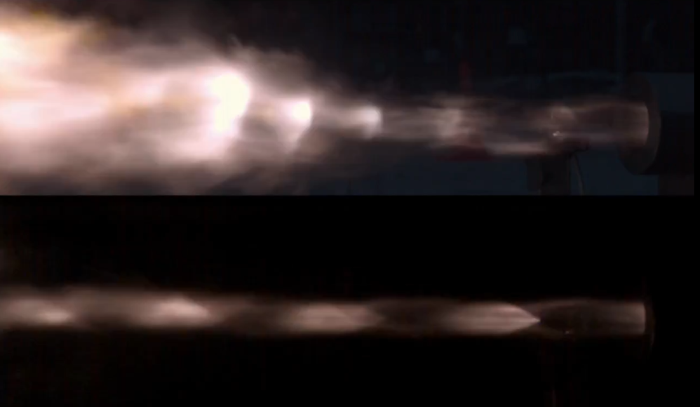
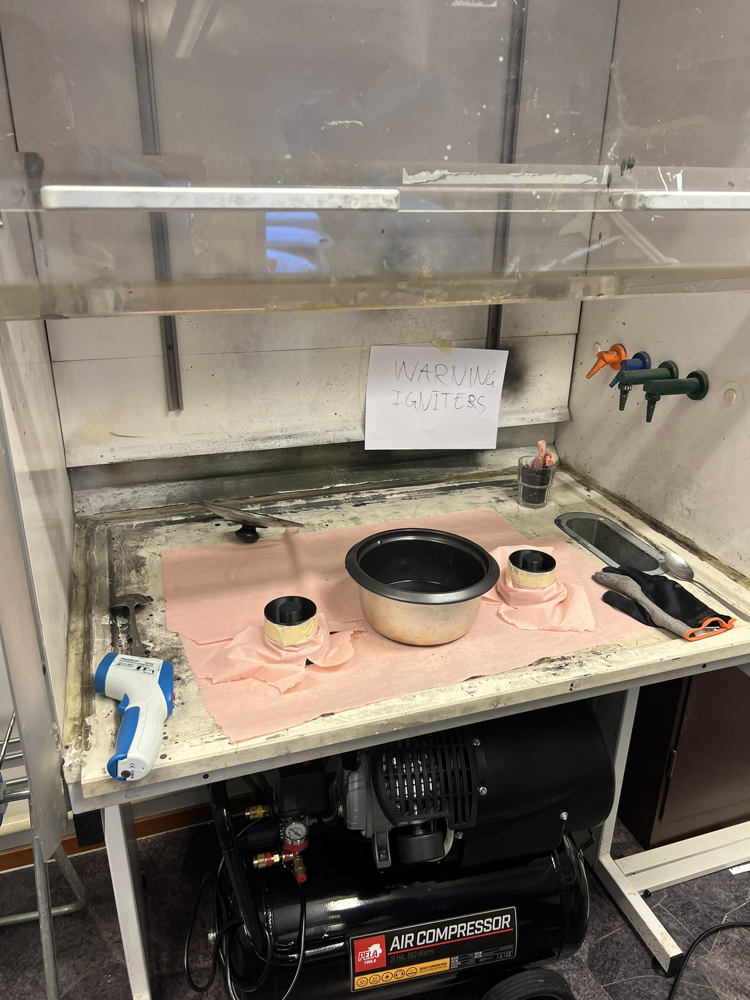
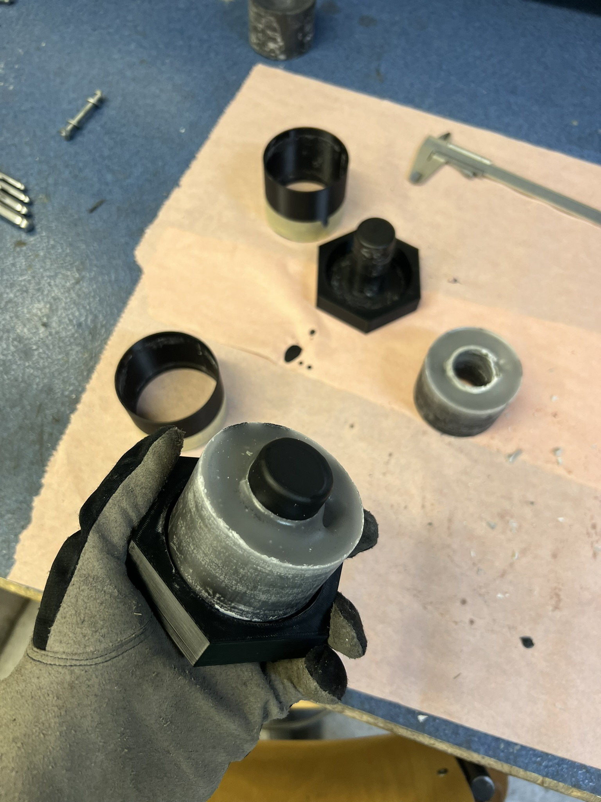
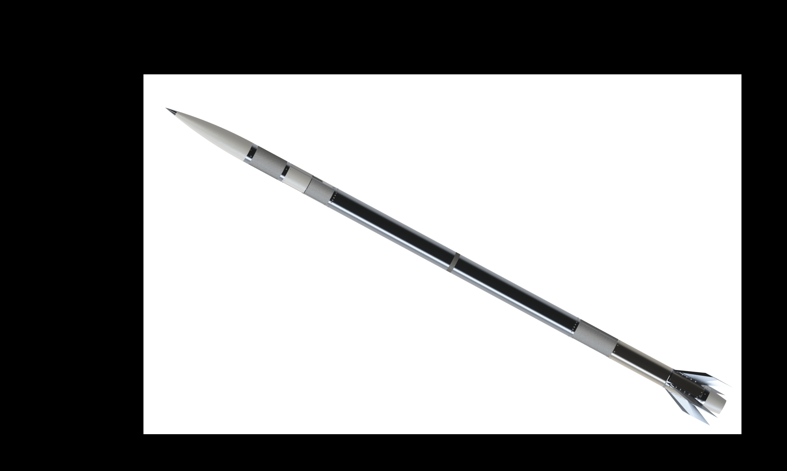

Our Teams
Software
In the software team, as the name suggests, we write all the software for the project. This encompasses a wide range of disciplines, from low-level device drivers, high performance network- and graphics code, to statistical analysis and post-processing.
We are just finishing up a major refactor of the code in the test bench, and will move on to the flight computer and automation once that is complete.
One of our major goals, except for writing functional code, is writing maintainable code. Experience in C, Python, and/or Git is nice to have, but not needed. Our code can be found on our Github
Electronics
Electronics is an essential part of any system, it turns the logic behind code and programming into instructions that the rest of the hardware can carry out.
At Raven, we have developed a trusty and proven platform for the existing test bench that takes care of both the “executing” (logic boards, relays, valves…) as well as the “measuring” (Sensors, communications with GS, etc). The current setup has been working with only minor interruptions for more than 10 cold-tests and numerous hot-tests. This platform has also been the foundation for newer and more reliable designs for our new test bench as well as for the rocket prototype itself.
Our ultimate goal is to provide the Raven Rocket with a reliable and trustworthy backbone that integrates all the systems necessary to deploy and launch the vehicle, while ensuring safe, efficient and intuitive operation. For such a goal, new applicants with solid knowledge in electronics and system integration are always welcome.
Injector
The injector team is responsible for designing the injector for our hybrid rocket engine. The injector plays a key role in controlling how the nitrous oxide is injected into the combustion chamber and how well it interacts with the fuel, which directly affects combustion stability, engine efficiency, and overall engine performance. Our work is closely connected to the engine team, and testing activities.
Currently, we are in the design phase of the injector, where we are working on sizing and tweaking injector geometry and parameters, comparing different injector concepts, and developing CAD models, while also using analytical models validated during testing to guide our design choices. In previous testing campaigns, the team has investigated different injector designs and concepts and conducted cold-flow and hot-fire testing, which helped us better understand the system and improve our design. This iterative testing and development of the injector let us increase our engine's thrust above our target of 1 kilonewton.
The next step in injector design is to refine our understanding of the propellant's state at different locations inside the propulsion system as well as improve overall engine efficiency by tweaking the design in close cooperation with the engine team.
New members in the injector team get involved in a wide range of tasks, including calculations, CAD design, test preparation, and analyzing test data. We are looking for motivated students who are interested in propulsion, thermodynamics, fluid dynamics or hands-on engineering work.

Mach Diamonds
Engine
In the Engine subteam we are actively working to improve the performance and reliability of our hybrid rocket engine. Our work covers the entire propulsion system: from the combustion chamber and fuel grain to the nozzle. Together with the Injector subteam, we aim to enhance the engine as a whole, focusing primarily -but not exclusively- on optimising thrust output.
Our future objectives include a deeper study into the optimal fuel grain composition to achieve more efficient combustion and a lower regression rate, as well as the development of a post-combustion chamber and a new nozzle geometry.
We are looking for motivated students with an interest in fluid dynamics, combustion processes or propulsion design.


Fuel Grain Manufacturing
Ox-tank
The oxidizer tank subteam in Raven is responsible for the safe storage, pressurization, and delivery of the oxidizer (N₂O) to the engine for combustion.
A critical design of the oxidizer tank has been completed, consisting of a cylindrical body with two end caps sealed using O-rings. Structural and functional analyses have been performed using simulations to assess the feasibility and safety of the design. Current testing experience is based on direct feeding of oxidizer from ground bottles to the engine, without an onboard oxidizer tank. During these tests, external temperature sensors and heating blankets are used to control and monitor pressurization, an approach that will also be applied to the flight system.
A major ongoing focus of the subteam is the development of the piping and feed system. This includes the design of piping that enable safe filling, pressurization, monitoring, venting, and automatic disconnection between the Ground Support Equipment and the rocket. Some analyses required for full system validation are to be performed. We are currently in the process of identifying and contacting manufacturers for the oxidizer tank components.
We are looking for new members interested in rocket propulsion. Ideal recruits are motivated to work on analytical and simulation tasks, piping and system design, or procurement and communication with industrial partners.
Future goals of the subteam include finalizing the piping and feed system design, completing remaining simulation and analysis tasks, manufacturing, performing validation testing, and integrating the oxidizer system into the full rocket system.
Test Bench
The test bench as a role is maybe a bit different since there is not as much focus on development/design. More maintenance and assisting during test-days currently. One does however get to do a little bit of everything, electronics, pipings, mechanical stuff, software etc.
Current Status: Currently preparing (waiting for EL & SW) for the updated test bench 2.0. The new version has new and simpler electronics layout most importantly (currently a rat's nest).
Recent Milestones: Added obsidian+dewesoft for data collection, not sure about older milestones.
Future goals: To update and validate the new test bench. There is also the constant goal of ensuring the bench is in operational condition.
New recruits: Seeking recruits that are not afraid of working with their hands. Also good if they are familiar with handling common workshop tools. Availability on weekends is quite important here.
Structures
The Structures subteam is responsible for the mechanical design, structural integrity and manufacturability of the rocket airframe. This includes the nosecone, fins, structural supports, and the avionics and recovery shells, as well as their interfaces with propulsion and recovery systems.
So far, the team has successfully completed the preliminary requirements definition and first design iterations for the nosecone, fins, avionics and recovery shell, and several structural elements. These designs have been reviewed internally and submitted to GKN, and are currently being refined based on aerodynamic feedback, manufacturability considerations, and structural verification. The team is now transitioning from pure design work to engineering validation, focusing on load definition, structural sizing, and analysis.
At the moment, Structures is working on finalising open designs, defining critical load cases, and performing structural analyses to support the EuRoC 2026 application. Particular attention is being given to interfaces between subsystems and manufacturability (DFM).
We are currently looking for new recruits with an interest in mechanical design, CAD, structural analysis, and manufacturing processes. Experience with CAD tools (such as SolidWorks or NX), FEA, or composites is a plus, but motivation and willingness to learn are the most important qualities.
Looking ahead, the main goals of the Structures subteam are to freeze the structural design for the EuRoC 2026 submission, complete a solid verification campaign, and prepare the transition towards detailed design and manufacturing. New members will have the opportunity to work hands-on with real engineering problems and contribute directly to a flight-ready rocket structure.

Full Rocket View
Recovery
The Recovery subteam is responsible for the safe deceleration, descent, and recovery of the rocket after flight. This includes the design and integration of the parachute system, deployment mechanisms, structural interfaces with the airframe, and the coordination with avionics for reliable triggering and sequencing.
So far, the team has completed the preliminary definition of recovery requirements and concepts, including recovery architecture, deployment strategy, and subsystem interfaces. Initial design work has been carried out for the recovery shell and its structural integration, and these designs have been reviewed and submitted to GKN as part of the preliminary design phase. The current focus is on refining the recovery system based on structural constraints, and mission requirements.
At the moment, the Recovery subteam is working on consolidating the preliminary design by finalising deployment concepts, validating load cases during parachute opening, and ensuring compatibility with the avionics and structural subsystems. Particular attention is being paid to reliability, redundancy, and compliance with EuRoC safety requirements.
We are currently looking for new recruits interested in mechanical design and experimental testing. Experience with CAD, basic structural analysis, or parachute and recovery systems is a plus, but motivation and a willingness to learn are the most important qualities.
Looking ahead, the main goals of the Recovery subteam are to freeze the recovery system design for the EuRoC 2026 application, perform verification through analysis and ground testing, and prepare the transition towards detailed design and manufacturing. New members will have the opportunity to work on a critical safety subsystem and gain hands-on experience in real aerospace engineering challenges.